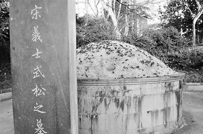

2016-02-14 文章来源：不二 作者：不二

网友“西湖长江001”16日在19楼网发帖：“今天早晨，路经西湖边的武松墓前，见墓上有不少玫瑰花瓣，很是好奇。”好奇之余他也拍了很多照片，放在网上传播开来，点击量很快超过8万。很多人关心，是谁撒的玫瑰花？
记者约了发帖人“西湖长江001”在此见面。十几分钟后，他骑着电瓶车赶来了，脖子上挂了相机。他说他姓江，很喜欢拍西湖，几年前苏小小墓武松墓遭人喷油漆，就是他拍的。
“昨天(2月16日)早上7点，我经过武松墓，看到墓上火红火红的，走过去一看，是玫瑰！怎么会这样？武松已经走了很多年了啊，送玫瑰是不是有点不现实？”
“应是前一天(2月15日)晚上撒的，白天撒不了，有人会管的……很奇怪，苏小小那边没那么多花。”
武松的后半生《临安县志》里记得较为清楚。说后来高权因得罪权贵而被罢官，武松也被赶出了衙门。继任杭州知府的叫蔡鋆，即京城太师蔡京的儿子。蔡鋆为官期间，虐政殃民，杭城百姓怨声载道，背地里都叫他“京虎”。武松公愤私仇越积越多，终于有一天，他藏匿在蔡府前，候到蔡鋆前呼后拥出来，即呼啸而上将其捉住，旁人尚未反应过来，武松已三下五除二将其击毙。武松也终因寡不敌众，被捕后死于狱中。当时的杭城市民，感其为当地除一“虎”，自发为他殓葬，造墓于西泠桥畔。后人立碑，题曰“宋义士武松之墓”。